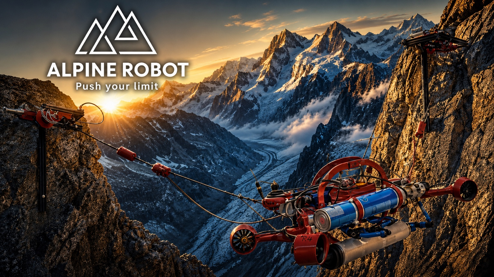

01
Bachelor thesis · Robotics
2026
ALPINE — Climbing Robot
High-level integration and experimental work for a climbing robot designed for mountain environments. My thesis work connects attitude control, rope/winch coordination, odometry and high-level command logic into a repeatable real-robot sequence.
ROSC++PythonControl
State EstimationReal Robot
